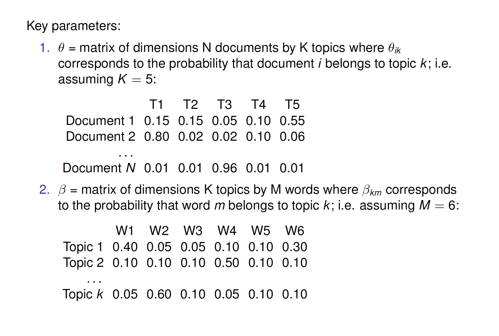
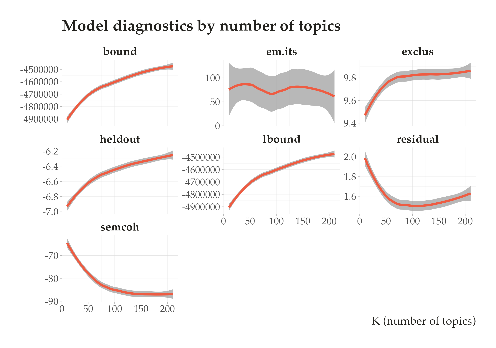
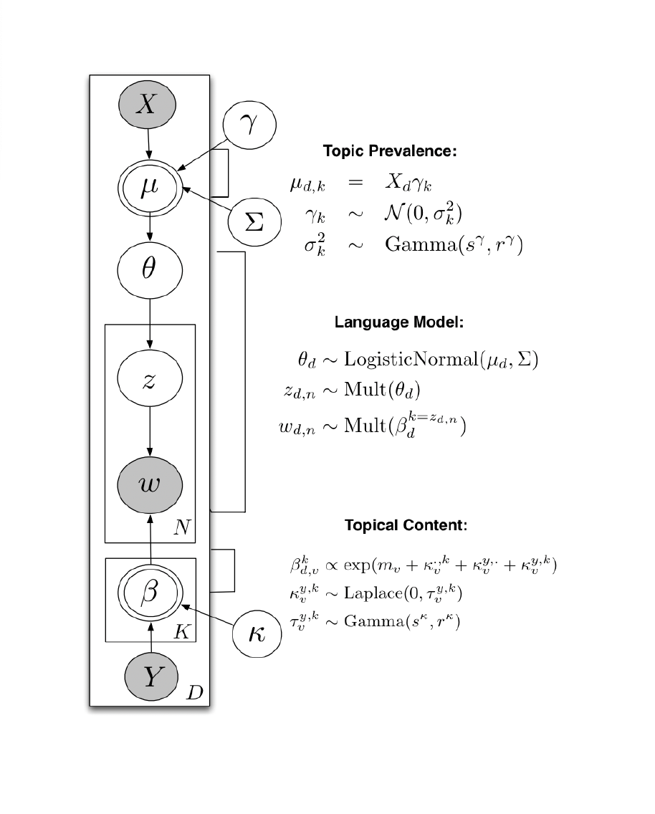
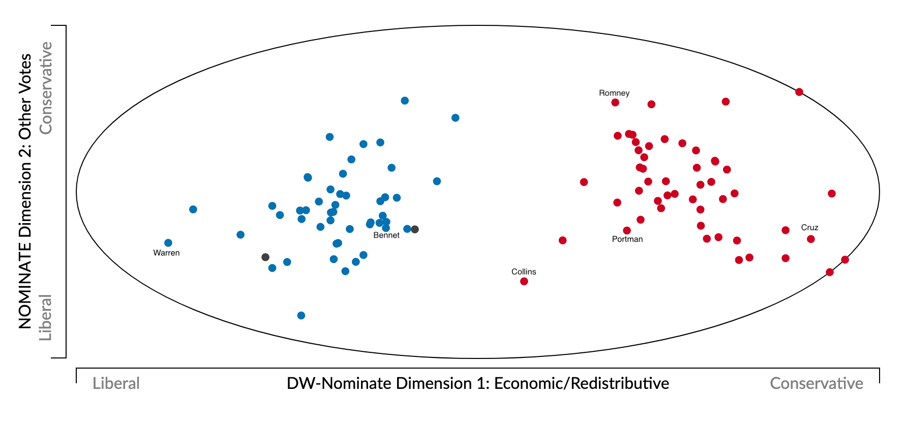
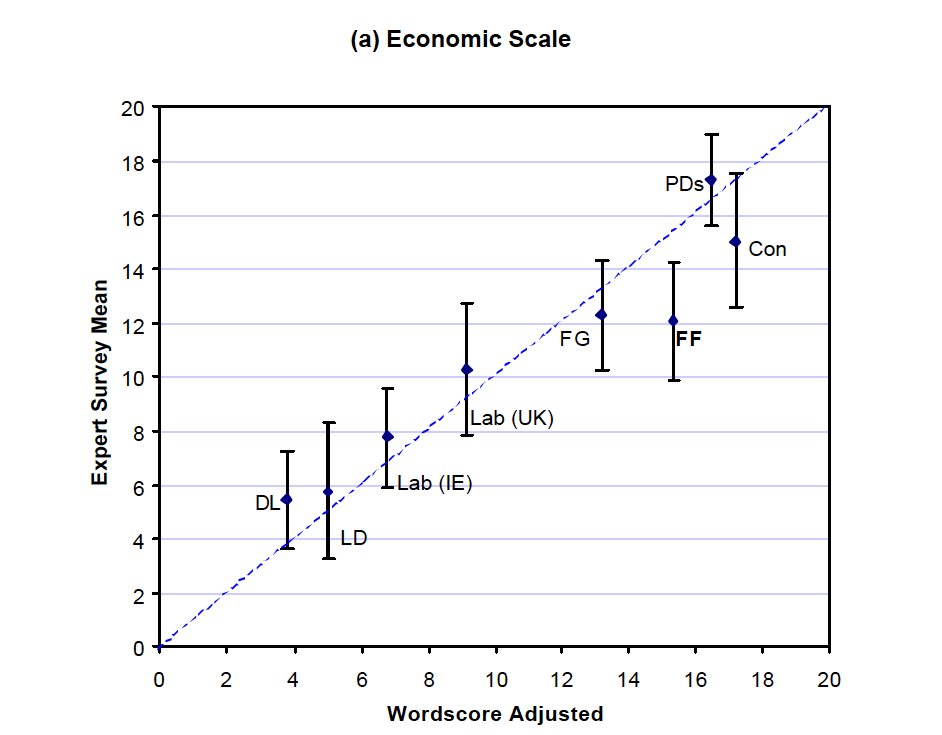
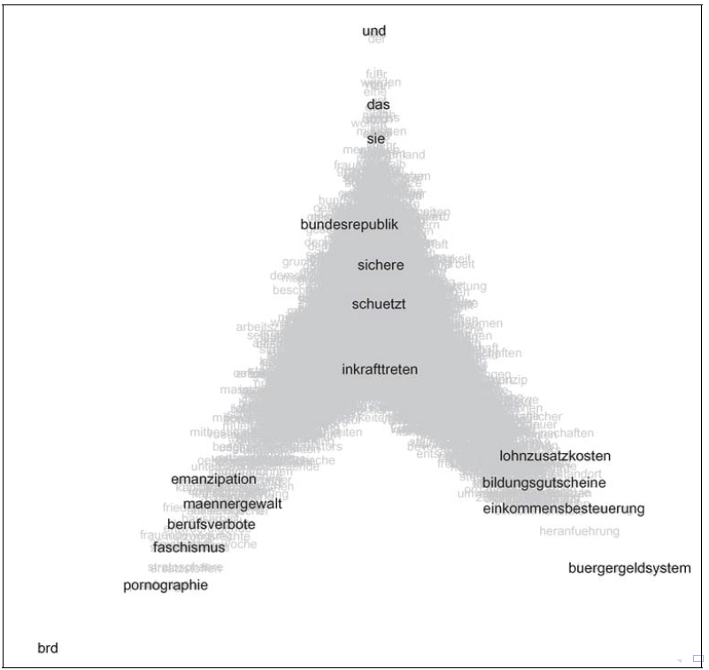
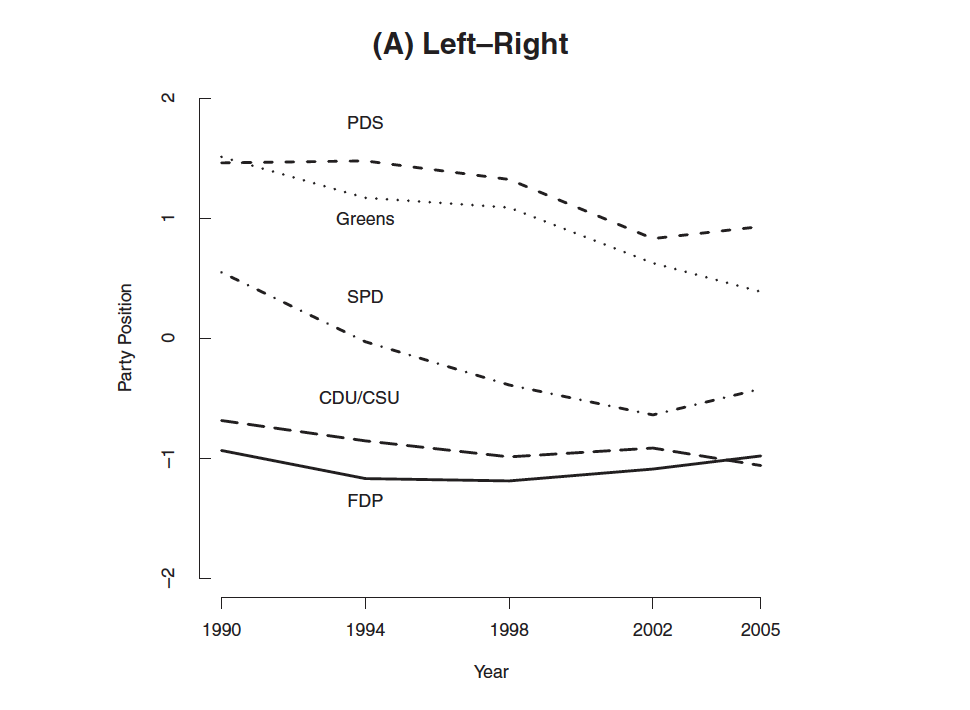
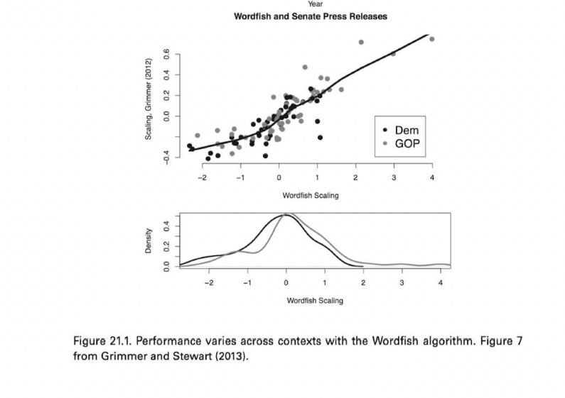

PPOL 6801 - Text as Data - Computational Linguistics
Week 10: Scaling Models for Text
Plans for Today:
Final Project + Mid-Semester Review
Finish Topic Models + Code
Overview of scaling models
Scaling models using text
supervised models: wordscore
unsupervised models: wordfish
Final Project
| Requirement | Due | Length | Percentage |
|---|---|---|---|
| Project Proposal | EOD Friday Week 8 | 2 pages | 5% |
| Presentation | Week 14 | 10-15 minutes | 10% |
| Project Report | Wednesday Week 15 | 10 pages | 25% |
For the project proposal:
you need to schedule a 30min with me at least a week before the due date.
For this meeting, I expect you to send me a draft of your ideas.
Project Proposal
The project proposal asks that you sketch out a general 2 page (single-spaced; 12pt font) project proposal.
A high-level statement of the problem you intend to address or the analysis you aim to generate
The data source(s) you intend to use
Your plan to obtain that data
The text as data method you plan to use.
A definition for what “success” means with respect to your project.
Mid-semester survey: https://forms.gle/evAYeWPzgrzrWtpi9
Review: Topic Models
Intuition: Language Model
Step 1: For each document:
- Randomly choose a distribution over topics. That is, choose one of many multinomial distributions, each which mixes the topics in different proportions.
Step 2: For each topic
- Randomly choose a distribution of words, also from one of many multinomial distributions., each with mixes words in different proportions
Step 3: Then, for every word in the document
- Randomly choose a topic from the distribution over topics from step 1.
- Randomly choose a word from the distribution over the vocabulary that the topic implies.
Mathematical Model: LDA Topic Model
To estimate the model, we need to assume some known mathematical distributions for this data generating process:
For every topic: Each topic k has a word distribution \(\beta_k\) , drawn from a Dirichlet prior:
- \(\beta_k \sim \text{Dirichlet}(\tau)\)
For every document: Each document d has a topic distribution \(\theta_d\) , drawn from a Dirichlet prior
- \(\theta_d \sim \text{Dirichlet}(\alpha)\),
For every word:
- For each word wdn in document d, choose a topic \(z_{dn}\) based on the document’s topic distribution, a topic \(z_{dn} \sim \text{Multinomial}(\theta_d)\).
- Choose a word \(w_{dn}\) from the topic’s word distribution: \(w_{dn} \sim \text{Multinomial}(\beta_{z_{dn}})\)
where:
- \(\alpha\) and \(\tau\) are hyperparameter of the Dirichlet priors
- \(\beta_k\) is drawn from a Dirichlet for per-topic word distribution
- \(\theta_d\) is drawn from a Dirichlet for the topic distribution for documents - \(K\) topics
- \(D\) documents in the corpus
- \(dn\) word position in document \(d\)
Parameters
Choosing the number of topics
Choosing K is “one of the most difficult questions in unsupervised learning” (Grimmer and Stewart, 2013, p.19)
Common approach: decide based on cross-validated statistical measures of model fit or other measures of topic quality.
- (Heldout) Log-likelihood: How well the model explains the observed data. Higher (closer to 0) is better
- Semantic coherence: How often top words in a topic appear together, indicating topic interpretability.
- Residuals: Checks how well the model explains the word co-occurrence patterns in the data.
- Exclusivity: Measures distinctiveness of topics — how unique their top words are.

Validation of topics
Working with topic models require a lot of back-and-forth and humans in the loop.
How to measure the quality of the topics?
Crowdsourcing for:
- whether a topic has (human-identifiable) semantic coherence: word intrusion, asking subjects to identify a spurious word inserted into a topic
- whether the association between a document and a topic makes sense: topic intrusion, asking subjects to identify a topic that was not associated with the document by the model
- See Ying et al, 2022, Political Analysis.
- Contextual Knowledge, reading the topics, and showing it has face-validity.
Applications
Barbera et al, American Political Science Review, 2020.
Data: tweets sent by US legislators, samples of the public, and media outlets.
LDA with K = 100 topics
Topic predictions are used to understand agenda-setting dynamics (who leads? who follows?)
Conclusion: Legislators are more likely to follow, than to lead, discussion of public issues,
Motolinia, American Political Science Review, 2021
- Data: transcripts of legislative sessions in Mexican states
- Correlated Topic model to identify “particularistic” legislation; i.e. laws with clear benefits to voters
- Each topic is then classified into particularistic or not
- Validation: correlation with spending
- Use exogenous electoral reform that allowed legislators to be re-elected
Exercise
Take 5-min to read the methods sections of these papers
List to me some of the decisions the authors need to make to get the topic models to work.
Do you think these make sense? What would you do different?
Extensions: Many more beyond LDA
Structural topic model: allow (1) topic prevalence, (2) topic content to vary as a function of document-level covariates (e.g., how do topics vary over time or documents produced in 1990 talk about something differently than documents produced in 2020?); implemented in stm in R (Roberts, Stewart, Tingley, Benoit)
Correlated topic model: way to explore between-topic relationships (Blei and Lafferty, 2017); implemented in topicmodels in R; possibly somewhere in Python as well!
Keyword-assisted topic model: seed topic model with keywords to try to increase the face validity of topics to what you’re trying to measure; implemented in keyATM in R (Eshima, Imai, Sasaki, 2019)
BertTopic: BERTopic is a topic modeling technique that leverages transformers and TF-IDF to create dense clusters of words.
STM: Adding Structure to the LDA

Prevalence: Prior on the mixture over topics is now document-specific, and can be a function of covariates.
Content: distribution over words is now document-specific and can be a function of covariates.
Coding
Scaling policy positions with Text
Many substantive questions in policy and politics depends on estimating ideological preferences:
- Is polarization increasing over time?
- are parties moving together over time?
- Do governments/coalitions last longer conditional on:
- how homogeneous coalition is?
- distance between coalition and congress ideal points?
- distance between coalition and median voter?
- Does ideology affect policy decisions?
- Economic cycles and elections?
- Globalization and the social welfare state?
- Does motivated reasoning affects beliefs/sharing of online misinformation?
Many more examples ….
WNominate

Scaling with without computational text analysis
Surveys
- Ask elites or regular voters about policy preference, and scale them in some sort of political continuum. Methods as: factor analysis, singula value decomposition, PCA, etc…
Behavioral data (for example, roll-call voting):
- Politicians vote on proposals (or judges make decisions) that are close to their ideal points
- Use statistical methods (mostly matrix factorization) to estimate orthogonal dimensions ~ Nominate Scores
- Politicians vote on proposals (or judges make decisions) that are close to their ideal points
Content Analysis using Text
- Manually label content of political manifestos (Comparative Manifestos Project) and place them in ideological scales
Scaling models with computational text analysis
In the past 20 years, computational text analysis has been widely used for building scaling models.
Advantages: fast, reliable, deals with large volumes of text, and easy to translate to other domains/language.
Wordscore: supervised approach, mimic naive bayes models, start with reference, and score virgin texts.
Wordfish: unsupervised approach, learn word occurrence from the documents using a ideal-points model.
Wordscore (Laver, Benoit, Garry, 2003, APSR)
- Def: supervised approach, similar to naive bayes models, learn association between words and reference text, and score virgin text.
Step 1: Begin with a reference set (training set) of texts that have known positions.
- Get speeches by AOC , give it -1 score.
- Get speeches by MTG, give it a +1 score.
Step 2: Generate word scores from these reference texts
- Pretty much like the naive bayes, but the class becomes a number (-1 or +1)
Step 3: Score the virgin texts (test set) of texts using those word scores
- scale virgin score to the same original metric (-1 to +1)
WordScore Calculation
Learning Words
\[ P_{wr} = \frac{F_{wr}}{\sum_r F_{wr}}\] - \(P_{wr}\): Given a set of reference texts, the probability that an occurrence of word \(w\) implies that we are reading text \(r\) is
- \(F_{wr}\): Frequency of word \(w\) in reference text \(r\)
Scoring Words
\[S_{wd} = \sum_r (P_{wr} \cdot A_{rd}) \]
\(S_{wd}\): Score of word \(w\) in dimension \(d\)
\(A_{rd}\): Pre-defined position of reference text \(r\) in dimension \(d\)
\(A_{rd}\) will be -1 for AOC and +1 for MGT documents, for example.
Scoring virgin texts
\[ S_{vd} = \sum_w (F_{wv} · S_{wd}) \] - \(S_{vd}\) weighted average of the scores by word frequency.
Example
Republican manifesto uses `wall’ 830 times in 1000 words, while Democrat use it only 160 times. Assume 1 for republican and -1 for democrat
\[P_{wr} = 830/(830+160)\]
\[P_{wl} = 160/(830+160) \] \[ S_w = 0.83*1 + -1*.16 = 0.66\]
Virgin text 1 mentions wall 200 times in 1000 words ~ \(0.2 * 0.66 = 0.132\)
Virgin text 2 mentions wall 1 times in 1000 words ~ \(0.001 * 0:66 = 0.0066\)
Repeat for all words!
Results

Wordfish (Slapin and Proksch, 2008, AJPS)
Same assumptions as in Wordscore (word usage provides information about policy placement), but in an unsupervised setting and with fully specified language model.
The count of word \(j\) from party \(i\) , in year \(t\):
\[ y_{ijt} \sim Pois(\lambda)\]
\[ \lambda_{ijt}=\exp({\alpha_{it} + \psi_j + \beta_j\times\omega_{it}}) \]
\(\alpha_{it}\): fixed effect(s) for party \(i\) in time \(t\) ~ deal with parties that write too much
\(\psi_j\): word fixed effect: some parties just use certain words more (e.g. their own name)
\(\beta_j\): word specific weights (discrimination parameter, adds more information than simple usage)
\(\omega_{it}\) estimate of party’s position in a given year.
Estimation
\[ \lambda_{ijt}=\exp({\alpha_{it} + \psi_j + \beta_j\times\omega_{it}}) \]
Nothing on RHS is known: everything needs to be estimated.
Use Expectation Maximization (EM) algorithm (same as we could use for topic models):
Initialize values based on counts of words and length of party manifestors a in the data
E-Step: run a poisson regression holding word parameters fixed (word verbose and word discrimination), and estimating the party parameters (party verbose and party position) based on counts of each word j in document it
M-Step: run a Poisson regression holding party parameters fixed, and estimating the word parameters based on counts of each word j in document it
Iterate until convergence
Other option: Bayesian Estimation with Gibbs sampling.
Results I

Results II

Assumption
All scaling models (either supervised or unsupervised) make a strong assumption of ideological dominance assumption
the primary distinguishing feature of the language of the political actors is ideology.
When the assumption holds: the model will reliably capture ideological differences
When the assumption doesn’t hold: the models will capture other dimension that separates language use, not exactly policy scaling.
Grimmer vs Wordfish
